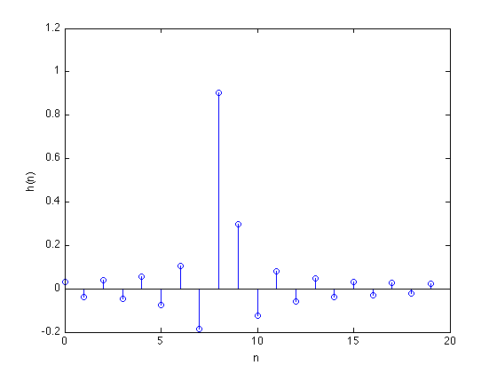
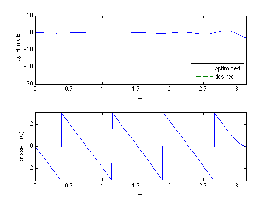

% "Filter design" lecture notes (EE364) by S. Boyd % (figures are generated) % % Designs an FIR filter given a desired frequency response H_des(w). % The design is judged by the maximum absolute error (Chebychev norm). % This is a convex problem (after sampling it can be formulated as an SOCP). % % minimize max |H(w) - H_des(w)| for w in [0,pi] % % where H is the frequency response function and variable is h % (the filter impulse response). % % Written for CVX by Almir Mutapcic 02/02/06 %******************************************************************** % problem specs %******************************************************************** % number of FIR coefficients (including the zeroth one) n = 20; % rule-of-thumb frequency discretization (Cheney's Approx. Theory book) m = 15*n; w = linspace(0,pi,m)'; % omega %******************************************************************** % construct the desired filter %******************************************************************** % fractional delay D = 8.25; % delay value Hdes = exp(-j*D*w); % desired frequency response % Gaussian filter with linear phase (uncomment lines below for this design) % var = 0.05; % Hdes = 1/(sqrt(2*pi*var))*exp(-(w-pi/2).^2/(2*var)); % Hdes = Hdes.*exp(-j*n/2*w); %********************************************************************* % solve the minimax (Chebychev) design problem %********************************************************************* % A is the matrix used to compute the frequency response % A(w,:) = [1 exp(-j*w) exp(-j*2*w) ... exp(-j*n*w)] A = exp( -j*kron(w,[0:n-1]) ); % optimal Chebyshev filter formulation cvx_begin variable h(n,1) minimize( max( abs( A*h - Hdes ) ) ) cvx_end % check if problem was successfully solved disp(['Problem is ' cvx_status]) if ~strfind(cvx_status,'Solved') h = []; end %********************************************************************* % plotting routines %********************************************************************* % plot the FIR impulse reponse figure(1) stem([0:n-1],h) xlabel('n') ylabel('h(n)') % plot the frequency response H = [exp(-j*kron(w,[0:n-1]))]*h; figure(2) % magnitude subplot(2,1,1); plot(w,20*log10(abs(H)),w,20*log10(abs(Hdes)),'--') xlabel('w') ylabel('mag H in dB') axis([0 pi -30 10]) legend('optimized','desired','Location','SouthEast') % phase subplot(2,1,2) plot(w,angle(H)) axis([0,pi,-pi,pi]) xlabel('w'), ylabel('phase H(w)')
Calling sedumi: 1199 variables, 321 equality constraints For improved efficiency, sedumi is solving the dual problem. ------------------------------------------------------------ SeDuMi 1.21 by AdvOL, 2005-2008 and Jos F. Sturm, 1998-2003. Alg = 2: xz-corrector, Adaptive Step-Differentiation, theta = 0.250, beta = 0.500 eqs m = 321, order n = 901, dim = 1200, blocks = 300 nnz(A) = 12580 + 0, nnz(ADA) = 13341, nnz(L) = 6831 it : b*y gap delta rate t/tP* t/tD* feas cg cg prec 0 : 2.03E+02 0.000 1 : -1.78E+00 9.13E+01 0.000 0.4496 0.9000 0.9000 1.40 1 1 2.6E+02 2 : -8.52E-01 3.66E+01 0.000 0.4009 0.9000 0.9000 4.03 1 1 3.4E+01 3 : -6.50E-01 2.07E+01 0.000 0.5648 0.9000 0.9000 2.79 1 1 1.3E+01 4 : -7.18E-01 6.34E+00 0.000 0.3065 0.9000 0.9000 1.19 1 1 4.2E+00 5 : -7.07E-01 3.37E-01 0.000 0.0532 0.9900 0.9900 1.11 1 1 2.1E-01 6 : -7.07E-01 1.72E-02 0.135 0.0510 0.9900 0.9900 1.00 1 1 1.1E-02 7 : -7.07E-01 2.56E-03 0.000 0.1491 0.9042 0.9000 1.00 1 1 1.6E-03 8 : -7.07E-01 6.97E-05 0.000 0.0272 0.9900 0.0000 1.00 1 1 5.4E-05 9 : -7.07E-01 6.98E-08 0.000 0.0010 0.9990 0.9990 1.00 1 1 6.5E-08 10 : -7.07E-01 6.96E-10 0.000 0.0100 0.9990 0.9939 1.00 1 2 6.6E-10 iter seconds digits c*x b*y 10 0.1 Inf -7.0710678098e-01 -7.0710678095e-01 |Ax-b| = 4.8e-10, [Ay-c]_+ = 1.2E-10, |x|= 1.7e+00, |y|= 5.1e+00 Detailed timing (sec) Pre IPM Post 2.000E-02 8.000E-02 0.000E+00 Max-norms: ||b||=1, ||c|| = 1, Cholesky |add|=2, |skip| = 0, ||L.L|| = 2591.85. ------------------------------------------------------------ Status: Solved Optimal value (cvx_optval): +0.707107 Problem is Solved
 